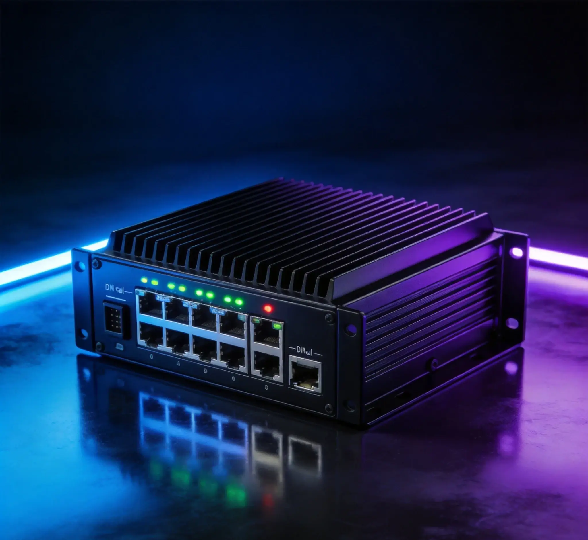
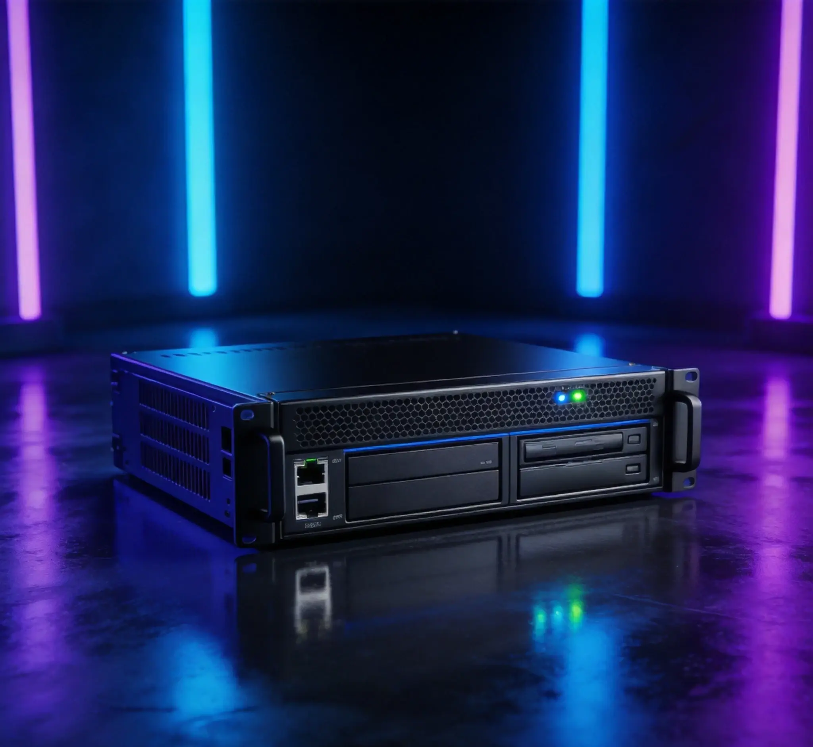
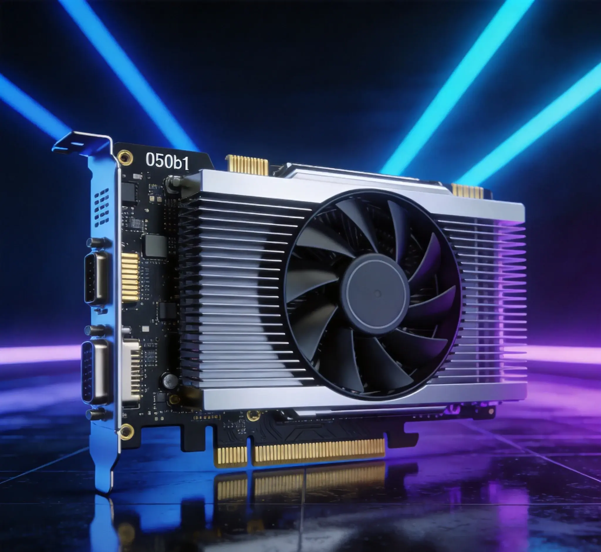

Le Serveur Edge IA déploie des algorithmes IA au bord du réseau, permettant une analyse intelligente en temps réel sans dépendre du cloud.
Caractéristiques Clés
Analyse Vidéo
Algorithmes IA intégrés supportant la reconnaissance faciale, l'analyse comportementale et la détection de casque.
Inférence IA
Accélération GPU/NPU supportant l'inférence en temps réel et la réponse à faible latence.
Stockage Local
Stockage local grande capacité supportant la mise en cache hors ligne et l'upload automatique après reconnexion.
Adaptation de Protocole
Support de multiples protocoles industriels et IoT pour un accès rapide aux appareils.
Informatique en Périphérie
Traitement local des données réduisant l'utilisation de bande passante et la pression sur le cloud.
Série de Produits

Boîtier d'Informatique en Périphérie
- Appareil d'informatique en périphérie compact
- adapté à l'inférence IA légère.

Serveur en Périphérie
- Serveur en périphérie haute performance supportant l'analyse vidéo multicanal.

Carte d'Accélération IA
- Module d'accélération IA enfichable pour une expansion flexible de la puissance de calcul.

Couverture Multi-Scénarios
Adapté à la construction intelligente, la fabrication intelligente, le trafic intelligent et l'énergie intelligente. Dans les régions africaines aux conditions réseau limitées, l'informatique en périphérie assure que les activités principales ne sont pas affectées par les fluctuations réseau et garantit un fonctionnement stable du système.
Traitement local des données
Traitement local des données avec une latence de réponse descendue à la milliseconde
Fonctionnement normal maintenu hors
Fonctionnement normal maintenu hors ligne, synchronisation automatique après récupération du réseau
Travail en synergie avec
Travail en synergie avec les plateformes cloud pour une architecture intégrée périphérie plus cloud